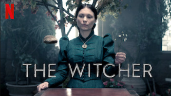
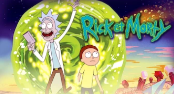
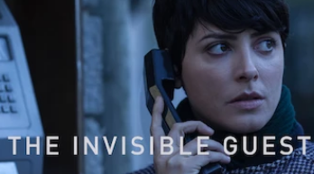

|  | ||||
|  |  |
Voilà quelques séries que j'aime bien regarder, malheuresement j'ai utilisé des images qui ne sont pas libres de droit(j'avais oublié), donc cette page n'est pas accecible depuis l'index
Les images sont des captures d'écran de Netflix. Je n'avais pas envie de la supprimer pour ne pas avoir fait tout ca pour rien donc je l'ai laissé mais accessible seulement depuis le dossier et pas depuis l'index.